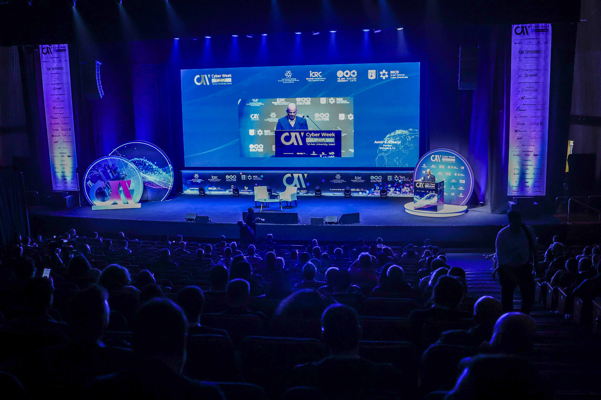

The December Pivot
Cyber Week, AI Week, and DefenseTech Week were scheduled for June 2025. Then the 12-Day War (Operation Rising Lion) came. We decided not to cancel; instead, we moved them to December.
We chose to keep going. Hosting these global events sent a clear message: the Israeli cyber and AI ecosystem remains open for science, innovation, and international dialogue.
We hosted high-level policy sessions on cutting-edge frontiers, from critical infrastructure and AI in health to cybersecurity in the quantum era, digital identity, and cybersecurity in photovoltaic systems.
